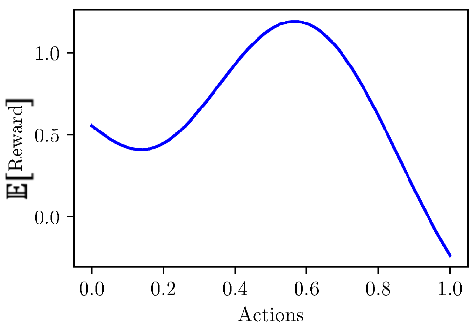

THEORY: LINEAR, KERNEL BANDITS
Odalric-Ambrym Maillard
HORIBA
April 22, 2025

Road map
- Bandit optimization for continuous set of arms
-
Linear regression setup and estimate - Confidence region around the estimate
- Linear UCB strategy
- Mathematics: the Martingale method
- Tightness: Other (sub-optimal) approaches
-
Kernel regression - From linear space to RKHS
- Kernel regression, Kernel Bayesian regression
- Kernel-UCB, Kernel-TS
- Regarding variance estimation
- Regret properties
Bandit optimization for continuous set of arms
\( y_t = f(x_t)+ \xi_t \)
- Action: \(x_t\in\mathcal{X}\)
- Reward: \(y_t \in \Real\)
- Noise: \(x_t\sim\mathcal{N}(0,\sigma^2)\)
Mean function : \(f:\mathcal{X} \to \Real\)
Linear model
- Parameter (Unknown): \(\theta\in\Real^d\)
- Feature (Known): \(\phi: \mathcal{X} \to \Real^d\)
Linear regression setup
From data points \( (x_n,y_n)_{n\leq N} \), compute
\( \min\limits_{\theta \in \Theta} \sum\limits_{n=1}^N(y_n - \langle \theta, \phi(x_n)\rangle)^2 \)
\( G_N \theta = \Phi_N^\top Y_N \)
\( Y_N = (y_1,\dots,y_N)^\top \) dimension: \(N\)
\(\Phi_N = (\phi(x_1);\dots,\phi(x_N))\) dimension: \(N\times d\)
\(G_N = \Phi_N^\top\Phi_N = \sum\limits_{n=1}^N \phi(x_n)^\top\phi(x_n)\) dimension: \(d\times d\)
Regularised
Regularised solution:
\( \theta_{N,\lambda} = (\Phi_N^\top\Phi_N+\lambda I_d)^{-1}\Phi_N^\top Y_N\)
For
\( f_N(x) = \phi(x)^\top (\Phi_N^\top\Phi_N +\sigma^2\Sigma^{-1})^{-1}\Phi_N^\top Y_N\)
\( \sigma^2_N(x) = \sigma^2 \phi(x)^\top(\Phi_N^\top\Phi_N +\sigma^2\Sigma^{-1})^{-1}\phi(x) \)
A first linear bandit approach
At time \(t\),
Compute
\( \theta_{t} = (\Phi_t^\top\Phi_t + \lambda I_d)^{-1}\Phi_t^\top Y_t\)
Choose action \(x_{t+1} = \argmax_{x\in\mathcal{X}} \langle \theta_{t}, \phi(x)\rangle\)
An optimistic linear bandit approach

At time \(t\),
Compute
\( \Theta_{t} = \{ \theta : \| \theta -\theta_t\|_{G_{t,\lambda}} \leq B_t(\delta)\}\)
Choose action \(x_{t+1} = \argmax_{x\in\mathcal{X}} \max_{\theta\in\Theta_t}\langle \theta, \phi(x)\rangle\)
How to obtain confidence bound?
\( \| \theta^\star -\theta_t\|_{G_{t,\lambda}} \leq \sqrt{\lambda} \| \theta^\star\|_2 + \|\sum\limits_{n=1}^t\phi(x_n)\xi_n\|_{G_{t,\lambda}^{-1}}\)
concentration of measure.
Mathematics: the Martingale method
"Improved algorithms for linear stochastic bandits." Abbasi-Yadkori, Pál, Szepesvári. Neurips 2011.
"Bregman deviations of generic exponential families." Chowdhury, Saux, Maillard, Gopalan. COLT 2023.
(details)Linear Thompson sampling
Kernel regression: From linear space to RKHS
Kernel regression, Bayesian kernel regression
with \(\lim_{j\to\infty} \sigma_j = 0\), and \((\psi_j)_j\) an orthonormal basis of \(L_2\) such that
\( k(x,y) = \sum\limits_{j=1}^\infty \sigma_j \psi_j(x)\psi_j(y) \)
If \(f(x)= \sum\limits_{j=1}^\infty \theta_j \phi_j(x)\) where \(\phi_j = \sqrt{\sigma_j}\psi_j\), then
\( \| f\|^2_\cK = \sum\limits_{j=1}^\infty \frac{1}{\sigma_j}\langle f, \psi_j\rangle^2_{L_2} = \sum\limits_{j=1}^\infty \theta_j^2 = \|\theta\|_{\ell_2}\)
Kernel regression: Estimation
Regularised
\( f_{\lambda,t}(x) = k_t(x)^\top (K_t + \lambda I_t)^{-1}Y_t\)
where
\( k_t(x) = (k(x,x_s))_{s\leq t} \) Dimension \(t\)
\( K_t(x) = (k(x_{s},x_{s'}))_{s,s'\leq t} \) Dimension \(t\times t\)
Estimation error and regret
For all \(\delta\in(0,1)\), with probability higher than \(1-\delta\),
it holds
\( \|f_\star(x)-f_{\lambda,t}(x)\|\leq \sqrt{k_{\lambda,t}(x,x)}\big[\|f_\star\|_k + \sqrt{\frac{2\sigma^2}{\lambda}(\ln(1/\delta)+\gamma_t(\lambda)}\big] \)
where
\( k_{\lambda,t}(x,x)\): Posterior variance.
\(\gamma_t(\lambda)\): Information gain.
Kernel UCB, Kernel TS
Regarding noise estimation
"Streaming kernel regression with provably adaptive mean, variance, and regularization", Durand, Maillard, Pineau, JMLR, 2018.
"Bregman deviations of generic exponential families." Chowdhury, Saux, Maillard, Gopalan. COLT 2023.